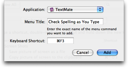

There are basically three types of actions in TextMate and each has its own system when it comes to key bindings (yes, this is not ideal).
Bundle items are commands, snippets, macros, language grammars, templates etc. and can all be found in the bundle editor (Window → Show Bundle Editor). Each of these actions has a key equivalent and an associated scope selector which can be edited from the bundle editor.
Menu items can be edited via System Preferences → Keyboard & Mouse. From here it is possible to change key bindings for either all applications or particular applications based on the menu items title.
This is done by pressing the plus button on the left side below the list on the Keyboard Shortcuts page, which displays the sheet shown below.

Some caveats:
Only key bindings which include the command modifier (⌘) will work.
Dynamic menu items i.e. those which change title depending on the programs state (like Fold Current Block / Selection) should be specified with their initial title. The initial title can be found by opening the MainMenu.nib file in Interface Builder (use Show Package Contents on TextMate and navigate to Contents → Resources → English.lproj).
You need to restart an application before key binding changes take effect.
An alternative to the system preferences is Menu Master from Unsanity. This allows you to change the key binding inside the application simply by hovering your mouse on the item and pressing the new key (and does not require a restart).
The last is probably the most essential, it is the keys which “just work” in the actual text editing area.
Here TextMate uses the Cocoa key bindings system where the master set of keys are defined in /System/Library/Frameworks/AppKit.framework/Resources/StandardKeyBinding.dict and used by all Cocoa text fields and to some degree other controls also.
The master set of keys can be augmented by ~/Library/KeyBindings/DefaultKeyBinding.dict. The most common request with respect to key bindings is to have page up/down move the caret and have home/end go to the beginning and end of the line. This article shows how this can be done.
In addition TextMate has a /path/to/TextMate.app/Contents/Resources/KeyBindings.dict file with some extra key bindings which are specific to TextMate (and thus not appropriate to put in the per user global key bindings file). You can copy this file to ~/Library/Application Support/TextMate and edit it, this will then take precedence over the bundled file.
The format is explained in the blog post linked to above.
For a list of which keys are available by default (in OS X) please see this list of key bindings created by Jacob Rus.
Apple also has a page about standard key bindings as part of their human Interface Guidelines. TextMate conforms to these and implement majority of the keys shown on that page.
In addition TextMate has the following key bindings, which are not visible in the menus and cannot be found in the standard key binding files:
| Key | Action |
|---|---|
⌥F2 |
Show context menu — This is equivalent to clicking the mouse at the current caret location while holding down control (⌃). If the current word is misspelled the context menu will contain spelling suggestions. |
⌃⎋ |
Show bundle items menu — this opens the gear menu which is located in the status bar. |
⌃S |
Forward incremental search. |
⌃⇧S |
Backward incremental search. |
⌘` |
Switch to the next/previous window. This keyboard shortcut is based on the physical location of the key so on many European keymaps it is instead ⌘< and ⌘> (it is the key to the left of the Z). |
⌥⌘` |
Switch between main window and drawer. Like the previous key this one is also based on physical location. The function is not available on Panther. |
⌃⇥ |
Go backwards through the chain of keyboard accessible controls. Normally this would be the same as ⇤ (⇧⇥) but that one doesn’t work when the text editing control has focus. The previous keyboard accessible control in that situation is the project outline in the drawer, so this key could be considered a “bring focus to the project drawer” key. |
| Modifiers | Purpose |
|---|---|
| ⌘ | This is for primary actions mostly defined by Apple or already a de-facto standard e.g. New, Open, Save, Print, Hide, Quit, Cut, Copy, Paste, etc. |
| ⇧⌘ | Adding the shift modifier often indicates a twist on the plain key equivalent. For example
|
| ⌥⌘ | Often (but definitely not always) this modifier sequence is used to toggle an option, e.g. Soft Wrap (⌥⌘W), Show Invisibles (⌥⌘I), Bookmarks (⌥⌘B), Line Numbers (⌥⌘L), Foldings at a given level (⌥⌘0-9) etc. |
| ⌃⌥⌘ | This modifier sequence is generally used for actions which open a window. For example Show Bundle Editor (⌃⌥⌘B), Show Clipboard History (⌃⌥⌘V), Show/Hide Project Drawer (⌃⌥⌘D), Show Web Preview (⌃⌥⌘P) etc. |
| ⌃⇧ | Less important bundle actions (commands and sometimes snippets) should generally use this modifier sequence. |
| ⌃⇧⌘ | This is the secondary modifier sequence for use with less important bundle actions (i.e. when the primary one is taken). |
| ⌃⌥⇧ | This is used to switch language grammar, the key is (generally) the first letter of the language grammar name. |
| ⌃⌘ | Actions related to projects are in this space, e.g. New Project, Save Project, Reveal in Project, etc. |